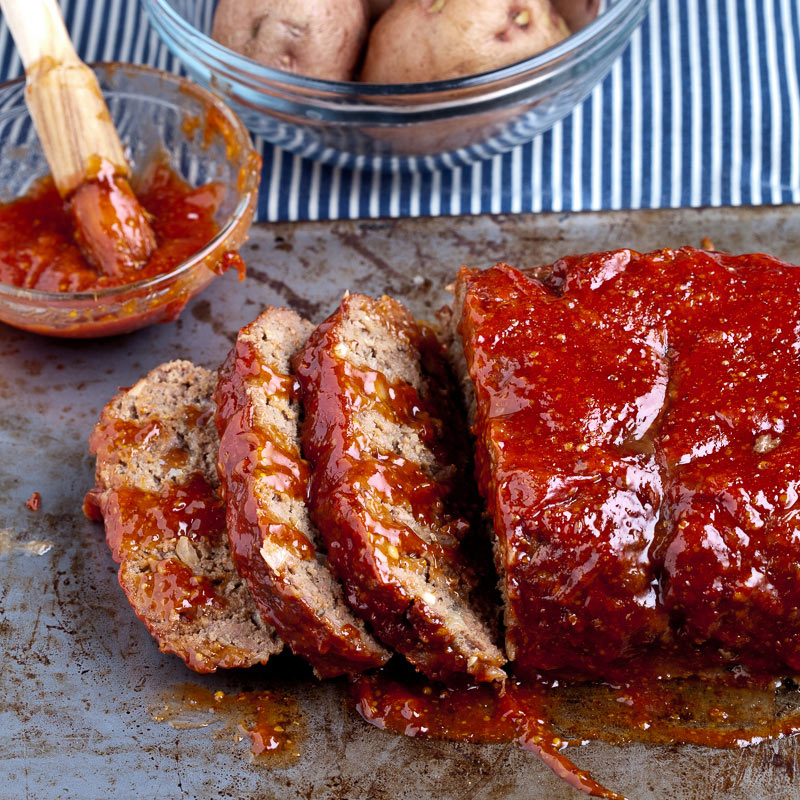

Meatloaf

Description
Tender, juicy meatloaf! Perfect with mashed potato and veggies
Ingredients
Meatloaf
- 128g Panko Breadcrumbs
- 1 Onion
- 750h Minced Beef
- 2 Eggs
- 1 TSP Worcester Sauce
- 60ml Tomato Sauce
- 2 OXO Cubes
Glaze
- 120ml Tomato Sauce
- 2 TBSP Cider Vinegar
- 1 TBSP Brown Sugar
Steps
- Preheat oven to 180C/350F
- Line a loaf tin with greaseproof paper
- Mix together all glaze ingredients in a small bowl then set aside for later
- Put breadcrumbs in a large mixing bowl
- Grate onion over breadcrumbs and mix until all breadcrumbs are wet
- Add remaining ingredients and mix well using your hands
- Form into a loaf shape, pinch and smooth over any cracks then transfer to loaf tin
- Brush generously with glaze
- Bake for 45 minutes. Remove from oven and scoop/pour off any excess fat then brush with most of the remaining glaze
- Bake for a further 30 minutes. Remove from oven
- Leave to stand for 10 minutes before cutting into thick slices